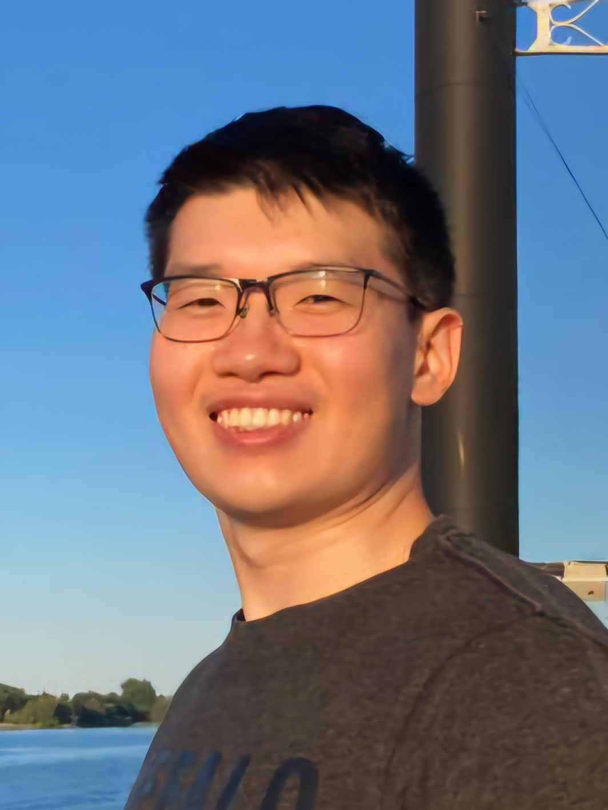

|
I am a Computer Science MSc student at the University of Toronto, supervised by David Lindell and Kyros Kutulakos in the Toronto Computational Imaging Group. I recieved an Bachelor's of Applied Science from the University of British Columbia studying Engineering Physics. At UBC, I was a student research assistant at the Robotics and Control Lab with Purang Abolmaesumi. Email / CV / Google Scholar / Twitter / Github |
 |
{kind=link}
|
My research interests include computational imaging, computer vision, machine learning, and robotics. |

|
Neural Inverse Rendering from Propagating Light
Anagh Malik*, Ben Attal*, Andrew Xie, Matt O'Toole, David B. Lindell, * Co-first authors. CVPR, 2025 (Oral Presentation, Best Student Paper Award üèÜ) project page / arXiv |
|
Deep Learning-Based Correction and Unmixing of Hyperspectral Images for Brain Tumor Surgery
David Black*, Jaidev Gill*, Andrew Xie*, Benoit Liquet, Antonio Di leva, Walter Stummer, Eric Suero Molina, * Co-first authors. iScience 27 (12) |
|
|
Machine and Deep Learning in Hyperspectral Fluorescence-Guided Brain Tumor Surgery
Eric Suero Molina, David Black, Andrew Xie, Jaidev Gill, Antonio Di Ieva & Walter Stummer Computational Neurosurgery, 245-264 |
|
Source code based on Jon Barron's website. |